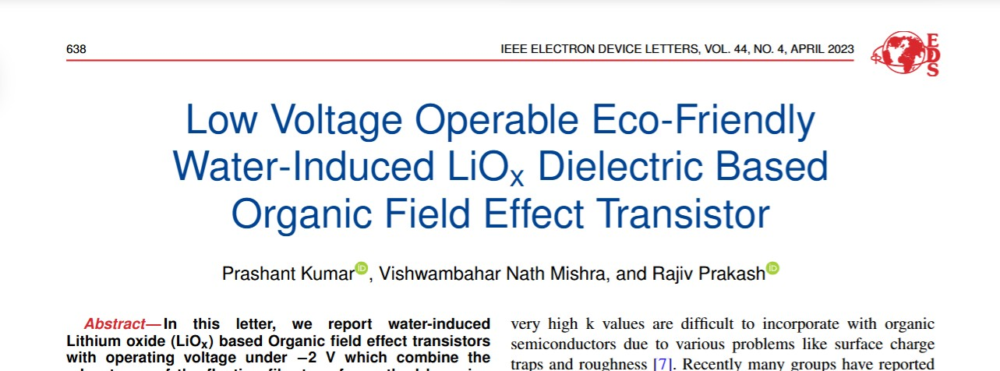
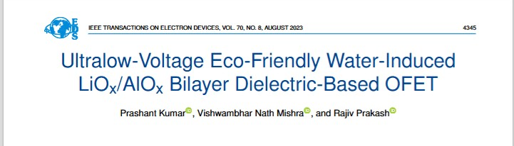
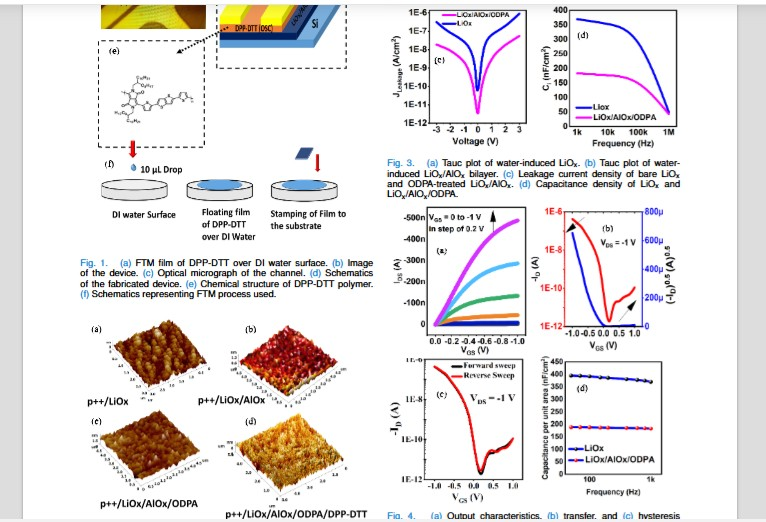
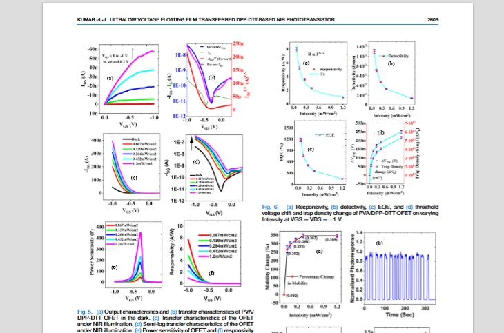

Research Vision
To pioneer the next generation of electronics by engineering eco-friendly, solution-processable materials for high-performance flexible and wearable devices. My research focuses on bridging the gap between fundamental material science and practical device applications, specifically in the areas of low-power sensors, biodegradable electronics, and human-machine interfaces. I aim to develop scalable fabrication techniques that enable the widespread adoption of these technologies to address critical challenges in healthcare and environmental monitoring.
Research & Academic Experience
July 2024 – Present
Assistant Professor & Research Lead
University of Petroleum and Energy Studies (UPES), Dehradun
- Established and led a new microfabrication facility with a 5 lakh seed grant to initiate research in organic electronics.
- Designed and launched the B.Tech VLSI curriculum, integrating modern fabrication and characterization techniques.
- Mentored undergraduate students in research projects, resulting in conference presentations.
2018 – 2023
Doctoral Researcher
Indian Institute of Technology (BHU), Varanasi
- Pioneered the use of water-induced LiOx as a high-k dielectric, achieving sub-1V operation in flexible OFETs.
- Published 6 first-author/co-author papers in high-impact journals, including IEEE EDL and TED.
- Developed highly sensitive gas sensors (NO₂) and NIR phototransistors based on novel device architectures.
Core Skills & Expertise
Fabrication & Processing
- Solution-Processable Thin Films
- Spin, Spray & Slot-Die Coating
- Photolithography on Flexible Substrates
- High-Vacuum Deposition (E-beam, Sputtering)
- Device Integration & Packaging
Materials Expertise
- Organic Semiconductors (p-type/n-type)
- High-k & Eco-Friendly Dielectrics
- 2D Materials (Graphene, TMDs)
- Flexible & Stretchable Substrates
- Conductive & Functional Inks
Characterization & Testing
- Advanced Microscopy (AFM, SEM, TEM)
- Spectroscopy (Raman, UV-Vis, PL)
- Electrical (IV/CV, B1500A)
- Mechanical Reliability (Bending, Strain)
- Environmental Stability Analysis
Simulation & Modeling
- TCAD Device Physics (Silvaco Atlas)
- Circuit Design (Cadence, HSPICE)
- Data Analysis (Python, MATLAB)
- Finite Element Analysis (COMSOL)
- Layout & Mask Design
Key Publications
- P. Kumar, V. N. Mishra, and R. Prakash, "Low Voltage Operable Eco-Friendly Water-Induced LiOx Dielectric Based Organic Field Effect Transistor," IEEE Electron Device Letters, vol. 44, no. 4, pp. 638-641, 2023. [DOI]
- P. Kumar, V. N. Mishra, and R. Prakash, "Ultralow-Voltage Eco-Friendly Water-Induced LiOx/AlOx Bilayer Dielectric-Based OFET," IEEE Transactions on Electron Devices, vol. 70, no. 8, pp. 4345-4350, 2023. [DOI]
- P. Kumar, V. N. Mishra, and R. Prakash, "Highly Sensitive and Selective Room Temperature-Operated NO2 Sensor Based on Eco-Friendly Water Processed Low Voltage Operable OFET," IEEE Sensors Journal, vol. 23, no. 12, pp. 12544-12551, 2023. [DOI]
- P. Kumar, V. N. Mishra, and R. Prakash, "Ultralow voltage floating film transferred DPP-DTT-based near-infrared phototransistor," IEEE Transactions on Electron Devices, vol. 71, no. 4, pp. 2605-2611, 2024. [DOI]
- V. K. Singh, A. Verma, P. Kumar, and V. N. Mishra, "Solution-processed, highly-efficient organic field-effect transistor based hydrogen sulfide gas sensor at sub-ppm regime," IEEE Sensors Journal, vol. 23, no. 15, pp. 16600-16607, 2023. [DOI]
- A. Verma, P. Kumar, et al., "Introduction of graphene oxide nanosheets in self-oriented air-stable poly (3-hexylthiophene-2, 5-diyl) to enhance the ammonia gas sensing of a p-channel thin film transistor," Sensors and Actuators B: Chemical, vol. 385, p. 133661, 2023. [DOI]
Education & Credentials
2018 – 2023
Ph.D., Electronics Engineering (Microelectronics)
Indian Institute of Technology (BHU), Varanasi
2014 – 2016
M.Tech (Hons.), Microelectronics & VLSI Design
Rajiv Gandhi Proudyogiki Vishwavidyalaya, Bhopal (Silver Medalist)
Research Highlights




